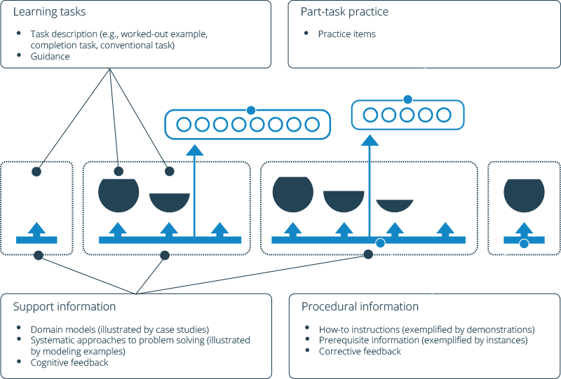

				<!--
				<section>
					<h1>Deploying UCP for Evaluation and in Production</h1>
                    <aside class="notes">Note:  Goal:  Be able to install Docker UCP both for evaluation and in production</aside>
                    <p><a href="https://www.google.com/url?q=https%3A%2F%2Fdocs.google.com%2Fdocument%2Fd%2F1MJkorSprOvyarO4FJwVMthgDLx1cuHykaWFffMS8irE%2Fedit%3Fpli%3D1">Docs Resource</a> - <a href="https://www.google.com/url?q=http%3A%2F%2Fucp-beta-docs.s3-website-us-west-1.amazonaws.com">Beta Docs</a></p>
				</section>
                -->
				
            	<section data-background="images/title_slide_lesson_2.jpg" class="blue_bg">
					<h2><span class="accent_text_color">Docker for Enterprise Operations</h2>
				</section>
				
				<!--
				<section data-background="#1AAAF8" class="blue_bg">
					<section data-background="#1AAAF8" class="blue_bg">
						<h2>Intro to Instructor</h2>   
						<p>Johnny Tu</p>
						<p>
							
						</p>
					</section>
					
					<section data-background="#1AAAF8" class="blue_bg">
						<h2>Instructor Info</h2>
						<ul>
							<li>6+ years as software instructor / curriculum developer</li>
							<li>Support Engineer and Consultant</li>
							<li>Atlassian JIRA, Confluence, Bamboo, Bitbucket</li>
							<li>Zendesk, GoodData, NGINX</li>
						</ul>
					</section>
				</section>
				-->
				
				<section data-background="#1AAAF8" class="blue_bg">
					<section data-background="#1AAAF8" class="blue_bg">
						<h2>Intro to Instructor</h2>   
						<p>Put your instructor bio here</p>

					</section>
				</section>
                
                <section data-background="#1AAAF8" class="blue_bg">
					<h2>A Note on Pedagogy</h2>
                    <ul>
                        <li>Docker believes in learning by doing, with support.</li>   
                        <li>Passing the course: 70+ on final assessment.</li>
                    </ul>		
									
                    <aside class="notes">Speaker Notes: In this course you will be challenged to complete a series of learning tasks upfront, but will be supported by content and the help from the instructor.  You may listen to a mini-lecture that will supplement the task, but emphasis will be completing the tasks.  You will be able to see how much you've learned through taking our pre and post assessments.</aside>
				</section>
				
				<section data-background="#1AAAF8" class="blue_bg">
					<h2>Session Logistics</h2>
					<ul>
					<li>1.5 days duration</li>
					<li>80% lab exercises, 20% lecture</li>
					<li>Short break every hour</li>
					<li style="padding-top: 10px;"><b>GoToTraining Audio Options</b>
						<ul>
						<li>Phone conference - number is displayed on GTT application</li>
						<li>Mic and Speakers - Please use headset</li>
						</ul>
					</li>
					<li style="padding-top: 10px;"><b>Ask questions at anytime</b>
						<ul>
						<li>Unmute yourself and ask</li>
						<li>Post in chat window</li>
						</ul>
					</li>
					</ul>
				</section>
				
				<section data-background="#1AAAF8" class="blue_bg">
					<h2>Assumed Knowledge and Requirements</h2>
					<ul>
					<li>Recommended viewing <a href="http://training.docker.com/self-paced-training">http://training.docker.com/self-paced-training</a></li>
					<li>Familiarity with using the Linux command line</li>
					<li><a href="https://www.docker.com/products/docker-toolbox">Docker Toolbox</a> installed on your PC or Mac</li>
					<li style="padding-top: 10px;">You should know the basics of Docker
						<ul>
						<li>Run a Docker container</li>
						<li>Search for and pull images from Docker Hub</li>
						<li>Use Docker Toolbox on your local PC or Mac</li>
						</ul>
					</li>
					</ul>
				</section>
				
				<section data-background="#1AAAF8" class="blue_bg">
					<h2>Your lab environment</h2>
					<ul>
					<li>You have been given nine AWS instances 
						<ul>
						<li>ucp-controller</li>
						<li>ucp-node-0</li>
						<li>ucp-node-1</li>
						<li>ucp-manager-0</li>
						<li>ucp-manager-1</li>
						<li>dtr-replica-0</li>
						<li>dtr-replica-1</li>
						<li>dtr-replica-2</li>
						<li>ldap</li>
						</ul>
					</li>
					<li style="padding-top: 10px;">Instances will be used for lab exercises</li>
					<li>Credentials and access key have been emailed</li>
					</ul>
				</section>
					
                <section data-background="#1AAAF8" class="blue_bg">
                    <h2>Agenda</h2>
					<ul>
                    <li>Introduction</li>
                    <li>Deploying Docker Datacenter</li>
					<li>Installation and integration of UCP and DTR</li>
					<li>Deploying Services in UCP</li>
					<li>Docker Swarm mode and classic Swarm</li>
					<li>Deploying applications in UCP</li>
					<li>User Management and access control</li>
					<li>LDAP integration</li>
					<li>Monitoring and troubleshooting</li>
					<li>Managing repositories with DTR</li>
					<li>DTR access control</li>
					<li>Content trust with DTR</li>
					</ul>
				</section>
                
                
             
                <section data-background="#1AAAF8" class="blue_bg">
                        <h2>Course Content</h2>
						<ul>
							<li>PDF copy of slide deck provided by instructor</li>
							<li>Majority of exercises will be on GitHub with links provided as needed</li>
						</ul>
				</section		
              
                
                <section data-background="#1AAAF8" class="blue_bg">
                	<section data-background="#1AAAF8" class="blue_bg">
						<h2>Quick Revision - Containers and Images</h2>
                    </section>
                    <section data-background="#1AAAF8" class="blue_bg">
                    	<h3 class="accent_text_color">Containers</h3>
                        <ul>
                        <li>Isolated application platform</li>
                        <li>Contains everything needed to run your application</li>
                        <li>Based on one or more images</li>
                        </ul><br><br>
                    	<h3 class="accent_text_color">Images</h3>
                        <ul>
                        <li>Read only template used to create containers</li>
                        <li>Built by you or other Docker users</li>
                        <li>Stored in Docker Hub, Docker Trusted Registry or your own Registry</li>
                        </ul>
                    
                    <aside class="notes">
                    	<h3 class="accent_text_color">Speaker Notes:</h3>
                        <li>How containers work is that Docker, uses the kernel on the host operating system to basically run multiple root file systems</li>
                        <li>Each root file system is called a container</li>
                        <li>Each container also has its own</li>
                        <div class="half_container_one">
                            <div class="cell">Processes</div>
                            <div class="cell">Memory</div>
                        </div>
                        <div class="half_container_two">
                            <div class="cell">Devices</div>
                            <div class="cell">Network stack</div>
                        </div>
					</aside>
                    </section>
				</section>
